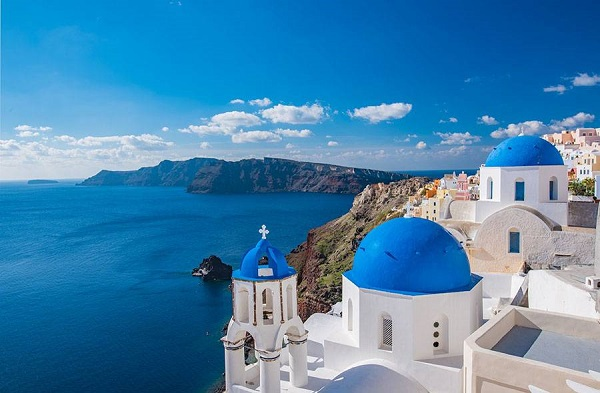
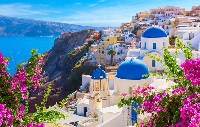
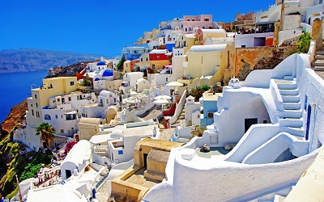
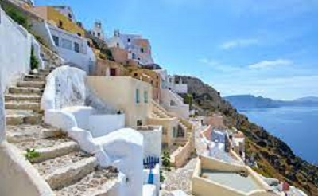

Сербія — слов’янська держава, одна з найменших на Балканах.
Утворившись після розпаду Югославії, Сербія має багато спільного із сусідніми країнами — Хорватією та Чорногорією.
Благополучною в плані рівня життя цю країну не назвеш, але ситуація поступово виправляється…
Цікаві факти про Сербію
- Офіційна мова — сербська.
- У 2012 році, Сербія отримала статус — кандидат у члени Євросоюзу.
-
Серби — великі любителі кави, цей напій п’ють навіть діти.
Мелену каву заведено варити в турці, причому в кожній сім’ї є власний рецепт її правильного приготування.
- Сербські лазні й термальні джерела були добре відомі ще в часи Римської імперії. Багато з них можна відвідати й зараз.
-
Сербія — країна малини, третина цих ягід у світі має сербське походження.
Проте, всередині держави малина коштує досить дорого, адже більшу частину врожаю відправляють на експорт.
- Римський імператор Костянтин, який прийняв християнство й переніс столицю держави у Візантію, народився в Сербії.
- У Сербії не заведено знімати взуття, коли ви приходите в гості, навіть якщо на вулиці зима.
- У Сербії чай — це напій із трав, який п’ють не під час застілля, а як ліки.
- Столиця Сербії, Белград, за свою історію, яка почалася в IX столітті, була завойована 40 різними арміями і 38 разів відбудовувалася заново.
- Перша світова війна почалася після вбивства австрійського ерцгерцога Франца Фердинанда сербським революціонером Гаврилом Принципом.
- У 1990-х роках у Сербії спостерігалася гіперінфляція — випускалася навіть банкнота номіналом у 500 млрд динарів.
- Серби нарівні з днями народження святкують «Славу» — день сімейного святого, який передається з покоління в покоління.
- Історичний герой Сербії — великий вчений Нікола Тесла.
- У 2008 році незалежність від Сербії проголосила республіка Косово.
- Із Сербії в 1963 році вдалося надіслати перший супутниковий сигнал, що зв’язав Європу й Північну Америку.
- Вулиця Принца Михайла в Белграді — одна з найкрасивіших пішохідних вулиць Європи.
- Серби будь-якої статі і віку — запеклі спортивні вболівальники, спортивні змагання обговорюють навіть на дитячих майданчиках.
Улюблений вид спорту — футбол.
- На цінниках у сербських магазинах можуть бути вказані розцінки із зазначенням місцевого аналога копійок («пара»), хоча вони давно вийшли з обігу.
- На півдні Сербії розташована унікальна природна пам’ятка — «Місто Диявола», з яким пов’язана безліч похмурих народних сказань.
«Місто» складається з понад 200 кам’яних стовпів заввишки до 15 метрів, на вершинах яких стоять стокілограмові блоки.
Крім того, у цій місцевості є два мінеральних джерела — «Вода диявола» й «Колодязь диявола».
Греція у 22 фактах: ніколи не показуйте грекам «OK»




Греція — сонячна країна з багатою історією і культурою, яка щорічно приваблює мільйони туристів.
Пропонуємо вашій увазі цікаві факти про Грецію.
Цікаві факти про Грецію
- Грецію омиває 5 морів: Егейське, Середземне, Іонічне, Фракійське та Критське.
Цікаво, що Фракійське входить до складу Егейського, а Критське — до складу Середземного моря. Проте, це не заважає їм вважатися абсолютно самостійними географічними об'єктами.
- У Греції найменше число розлучень серед всіх країн Євросоюзу.
- Грецькі «бюджетники» вважаються елітою суспільства. Військові, вчителі, лікарі та поліціянти — це найпрестижніші та найвисокооплачуваніші професії.
- В грецьких школах вивчають дві іноземні мови, причому перша — англійська — є обов'язковою, а другу учні можуть вибрати самі.
- Греки обожнюють каву. Навіть у самий розпал робочого дня при високій завантаженості грек знайде час для перерви «на каву».
- У столиці Греції — Афінах — проживає понад 40% всього населення країни.
- Ні в якому разі не варто демонструвати греку знаменитий жест «OK».
Показуючи співрозмовнику кільце, утворене вказівним і великим пальцями, ви тим самим називаєте його гомосексуалістом. За це й побити можуть!
- Популярний у нас грецький салат на своїй батьківщині дуже сильно відрізняється і за смаком, і за кількістю інгредієнтів. Самі греки називають цей салат «хоріатіки» — «сільський».
- В грецьких ресторанах і кафе, поки відвідувач чекає своє замовлення, йому обов'язково приносять безкоштовний стакан води з льодом.
Крім того, у багатьох закладах заведено до напоїв подавати різні солодощі, вартість яких потім не включається в рахунок.
- У Греції заведено вітатися зі знайомими людьми, цілуючи їх в кожну щоку. Цікаво, що це правило поширюється і на чоловіків.
Ну а знайомими в країні вважають усіх людей, яких зустрічали більше одного разу.
- Греція — країна, в якій не реєструються світські шлюби. Інститут сім'ї тут повністю підконтрольний православній церкві.
Якщо пара обвінчалася у церкві, то держава автоматично визнає їх шлюб законним.
Цікаво, що дружина не може взяти прізвище чоловіка, тому все життя користується власним. Дітям же можуть дати і прізвище батька, і прізвище матері — це вже як захочеться батькам.
- Виявляється, греки діляться на дві великі групи: елліни та понтійці. Елліни — це корінні греки, а понтійці — вихідці з країн колишнього СРСР.
Еллінський і понтійський діалекти досить сильно відрізняються. Офіційною мовою Греції вважається еллінський варіант грецької мови.
- Великі магазини в країні працюють щодня до 18.00 або 19.00.
Маленькі ж магазинчики відкриті або тільки до обіду, або тільки після нього. Цікаво, що на літо вони і зовсім можуть закриватися, так продавці в цей час традиційно йдуть у відпустки.
Після 20.00 купити що-небудь можна тільки в кіосках — «періпторах», але їх асортимент дуже мізерний. Цілодобових магазинів в Греції практично немає.
- Жителі Греції вкрай непунктуальні. Спізнитися на годину-півтори греки вважають абсолютно нормальним.
- Ще однією характерною рисою греків є постійне прагнення обдурити рідну державу. Напевно, їх можна вважати чемпіонами світу з ухилення від податків!
- У Греції є свій аналог Ватикану — монастирська держава Афон.
Що цікаво, для її відвідин потрібно оформляти окрему візу, причому жінкам в ній буде відмовлено в будь якому випадку — на Афон допускаються виключно чоловіки.
- Колись Греція була частиною Візантійської Імперії. Греки пам'ятають про це, і над багатьма архітектурними пам'ятками можна побачити відразу два прапори: державний та візантійський.
- В грецьких містах дуже мало висотних будівель. Зазвичай вони забудовані будинками висотою в 3-5 поверхів.
- Греки рано лягають (о 22-23 годині вечора) і рано встають (о 5-6 ранку).
Необхідну кількість сну вони добирають під час сієсти — найжаркішого часу дня, який припадає на проміжок з 14.00 до 16.30. Шуміти під час сієсти, а також з 22.00 по 06.00 — вірний спосіб привернути увагу поліції.
- У багатьох грецьких містах каналізація прокладена надто близько до поверхні землі, тому на вулицях бридко смердить.
- У Греції слова «поліціянт» і «ледар» — синоніми. При цьому в країні найнижчий в ЄС рівень злочинності.
- У деяких районах країни туристам радять заходити в морську воду в гумових капцях. Річ у тому, що біля берега повно морських їжаків, рани від голок яких дуже довго не загоюються.